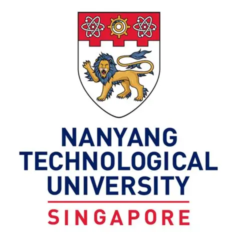
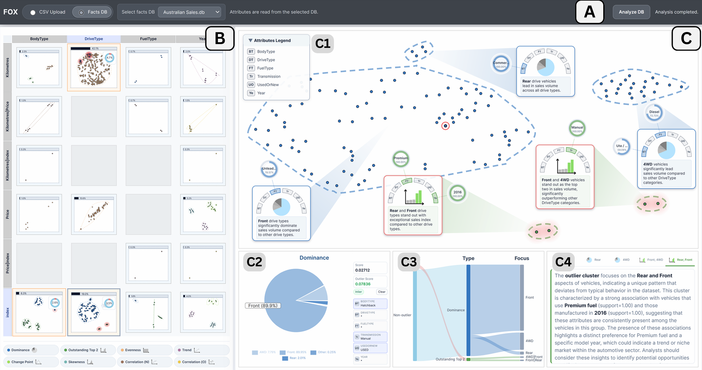
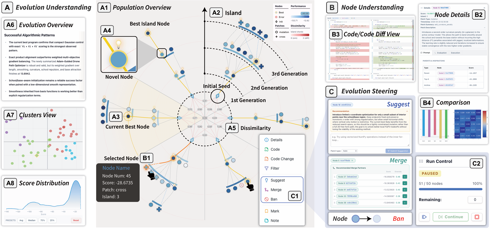
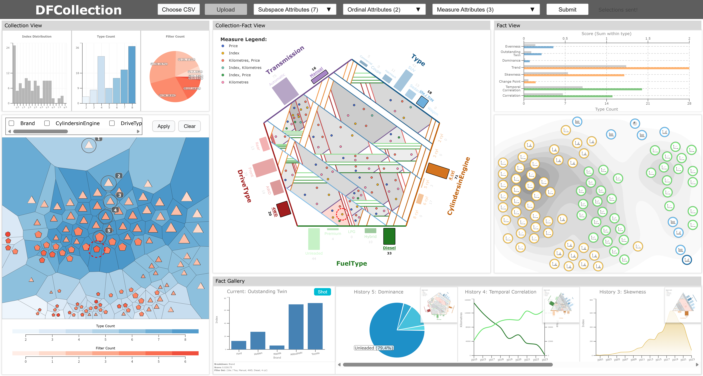
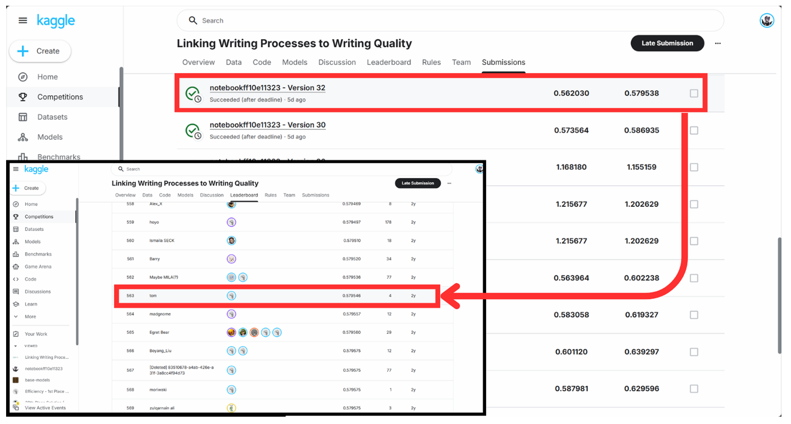
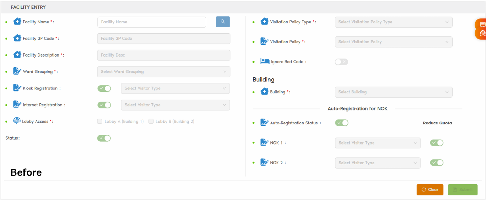
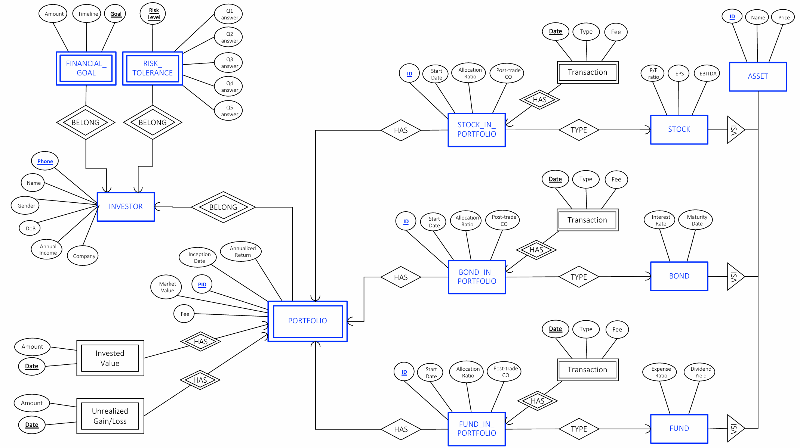
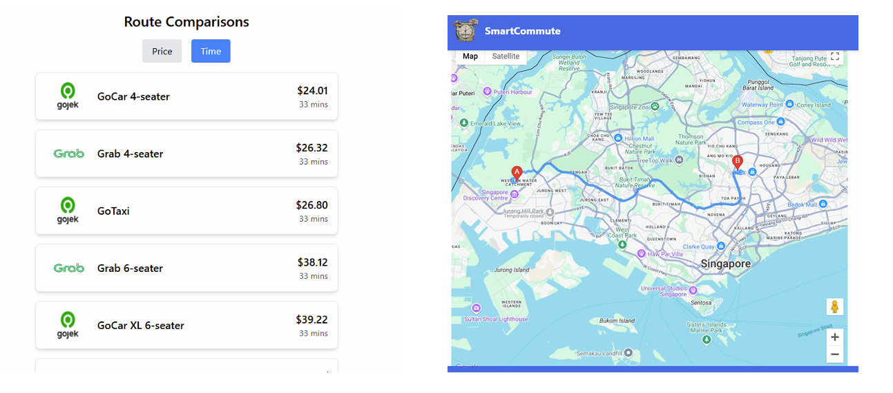
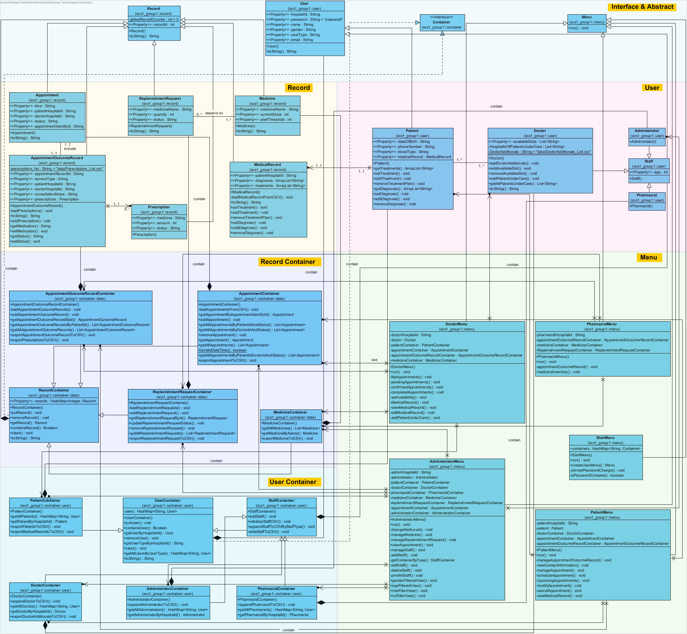

About Me
I am currently a Year 3 undergraduate at Nanyang Technological University, studying in the College of Computing and Data Science with a major in Computer Science. I am actively seeking research opportunities to further develop my academic interests. My current CGPA is 4.78 / 5.00, which places me on track for Highest Distinction. During the summer break after Y1S2, I took the GRE and achieved a score of 324/340. I have experience in software engineering, databases, object-oriented systems, data analysis, data visualization and have also built personal AI tools and prediction models. In Year 2, I joined the URECA programme under Prof. Wang, proposing a scalable and hierarchical system for data analysis and visualization. I also completed a graded Professional Internship at Centricore as a Junior Software Engineer. My interests include machine learning, data analysis, and data visualization, and I am currently collaborating on a project involving genetic algorithms. I am open to new research opportunities. Please feel free to contact me if you would like to connect or discuss potential collaborations.
News
-
11 Jun 2026
Arrived at Hong Kong and begin 8 weeks Summer research program at HKUST!
-
7 May 2026
End the Year 3 Semester 2!
-
1 Apr 2026
Submitted the EvoMaestro to UIST and FOX to VIS!
-
31 Mar 2026
Receive the offer of NUS IRIS program!
-
11 Mar 2026
Receive the offer of HKUST Summer Research Program under Raymond Wong!
-
5 Dec 2025
Completed the Professional Internship as Software Engineer at Centricore!
-
9 Nov 2025
Completed research on data visualization and development of the DFCollection system!
-
8 Aug 2025
Started my second URECA project, focusing on machine learning and genetic algorithms!
-
21 July 2025
Commenced my Professional Internship at Centricore!
-
15 June 2025
Start my Summer Program in University of Tokyo!
Education
Nanyang Technological University
Majoring in Computer Science at CCDS with a current CGPA of 4.64 (Y1S1–Y2S2), on track for Highest Distinction.

Chongqing Yucai Secondary School
Selected into the highest-ranked class and achieved an average ranking within the top 30 among over 1,800 students.
Publications
-

FOX: A Visual Analytics System for Interactive Exploration of Data Fact Outliers
Under revision, submitted to IEEE VIS 26
-

EvoMaestro: An Interactive Visual Analytics System for Interpretable and Steerable LLM-Driven Program Evolution
Under rebuttal at ACM UIST
-

DFCollection: A Scalable Visual Analytics System for Hierarchical Fact Exploration
Under revision, submitted to Visual Informatics
Internship
Centricore (S) Pte. Ltd. – Junior Software Engineer
- Worked on full-stack development using React, TypeScript, Node.js, and SQL Server.
- Improved Azure authentication workflows and integrated public-key–based validation.
- Built an automated email notification service using AWS SES.
- Delivered a complete Blacklist & Whitelist report page, including UI, backend API, and SQL queries.
- Supported feature migration across hospital Visitor Management Systems.
- Debugged, enhanced, and maintained production-level code in a large enterprise system.
Projects

SC4000 - Quality Prediction
Developed a machine learning pipeline for the Kaggle competition “Linking Writing Processes to Writing Quality,” using keystroke logs to reconstruct essays, extract behavioral and text-based features, train diverse models, and improve prediction performance through ensembling, achieving a top 30% ranking.
View projectFOX
FOX is a visual analytics system for interactive exploration of data fact outliers, enabling users to detect, analyze, and interpret anomalous data facts through structured fact grouping, tailored outlier scoring, coordinated visualizations, and LLM-assisted insight summarization.
View projectEvoMaestro
EvoMaestro is an interactive visual analytics system for interpretable and steerable LLM-driven program evolution, enabling users to understand evolutionary strategies, inspect evolving code through coordinated visualizations, and guide the evolution process with human-in-the-loop interventions such as suggestion, merge, and pruning operations.
View project
NUHS VMS
During my internship at Centricore, I helped enhance the Visitor Management System for the National University Hospital System by adding and optimizing features, and the project remains business confidential.
View projectDFCollection
We developed DFCollection, a scalable visual analytics system for hierarchical fact exploration that visualizes global fact distributions, supports efficient navigation across large search spaces, and enables structured analysis through filter-based subspaces.
View project
SC2207-TotalInvest
Built a relational database system for TotalInvest as group leader. Designed the ER diagram, normalized schema (3NF), and SQL queries to manage portfolios, transactions, and performance tracking using MS SQL Server.
View project
SC2006-SmartCommute
Developed a transport planning app using React.js and MongoDB. Integrated public datasets and Google Maps API to provide intelligent route recommendations and an intuitive user interface.
View project
SC2002-HMS
Created a Java-based CLI Hospital Management System using OOP principles. Managed patients, doctors, appointments, and prescriptions while applying SOLID design and file-based storage without external databases.
View projectExperience
HKUST Summer Research Program
Incoming summer researcher under Raymond Chi-Wing Wong at The Hong Kong University of Science and Technology, focusing on efficient database query algorithms and optimization.
URECA (2nd) Evolutionary Algorithms and Data Fact Outlier analysis
Conducted two research projects under the supervision of Prof. Wang and research staff member Liang: EvoMaestro: Toward Interpretable and Steerable LLM-Driven Program Evolution (submitted to UIST) and FOX: Visual Exploration of Data Fact Outliers (submitted to VIS).
The University of Tokyo Global Unit Courses (GUC)
Completed an intensive course on cosmology and computational scientific analysis, applying programming and statistical methods to explore astronomical data and present research findings.
NTU Deep Learning Week
Participated in NTU Deep Learning Week, applying fundamental and advanced deep learning techniques to develop a healthcare-focused solution by building and training neural network models to analyze patient data, identify key risk indicators, and demonstrate how AI-driven prediction can support real-world medical decision-making.
IET Liaison Manager
Serving as Liaison Manager for the Institution of Engineering and Technology (IET). Organized guest lectures and networking events connecting students with industry professionals, including the IET CrossCampus Connect initiative between UOSM and PSB Academy, and coordinated a Mediacorp industry sharing session in October 2025.
URECA (1st) Data Facts Exploration and Visualization
Participated in the URECA undergraduate research programme, focusing on exploratory data analysis and visual analytics. Proposed the DFCollection system, a novel data-fact collection approach for improving clustering and hierarchical exploration, and contributed to the design of a scalable visualization system.